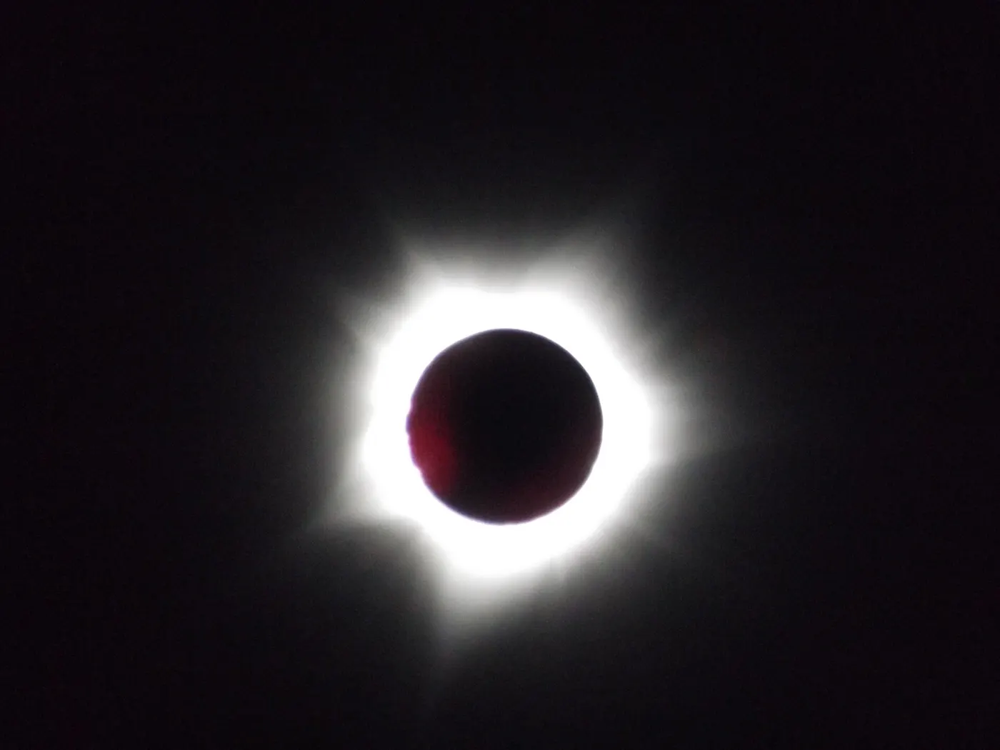
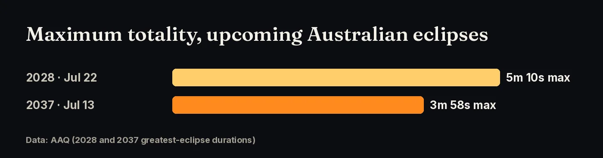
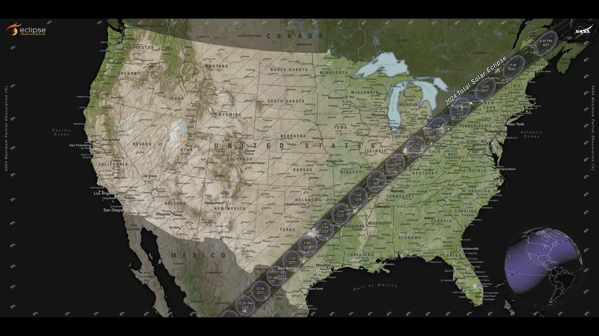
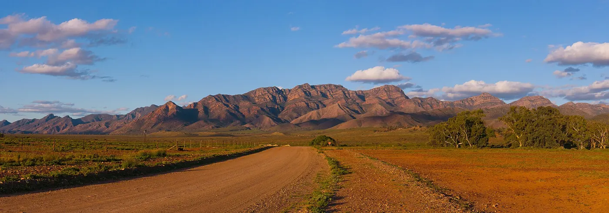
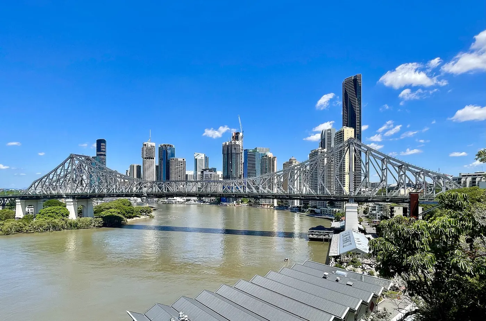

Saturday 22 July 2028: a coast-to-coast total solar eclipse, the first of four more Australian totalities by 2038.
until totality begins on mainland Australia (Kimberley), 22 July 2028

The next total solar eclipse on the Australian mainland is on Saturday 22 July 2028. Its path crosses the Kimberley, the Northern Territory, south-west Queensland and New South Wales, including Sydney, then New Zealand. All of Australia sees at least a partial eclipse that day. After 2028, there are three more total eclipses by 2038.
| Date | Path of totality in Australia | Highlights |
|---|---|---|
| 20 Apr 2023 (past) | North West Cape, WA (Exmouth) | Hybrid eclipse, about 1 minute of totality |
| 22 Jul 2028 | Kimberley → NT → SW QLD → NSW incl. Sydney → NZ | Up to 5m 10s; Sydney 3m 48s |
| 25 Nov 2030 | SA (Eyre Peninsula, Flinders Ranges) → NW NSW → S QLD | Path ends near sunset |
| 13 Jul 2037 | S WA → S NT (Uluru) → QLD incl. Brisbane & Gold Coast → NZ | Max ~3m 58s near Bedourie |
| 26 Dec 2038 | Central WA → SA → NSW/Vic border → NZ | — |

Sources: Astronomical Society of South Australia; AAQ: Australia’s 5 eclipses; AAQ: 13 July 2037; AAQ (Xavier Jubier data).
It is the first total eclipse over Sydney since 1857. At the greatest eclipse in the Kimberley, totality lasts up to 5 minutes 10 seconds, and the path crosses the whole continent. See our guides to the Kimberley, the Outback, Sydney and New Zealand.

Sources: AAQ (Xavier Jubier data)
2030: late afternoon over South Australia’s Eyre Peninsula and the Flinders Ranges, through Tibooburra and Cunnamulla, and ending at sunset near Miles, QLD. 2037: from Geraldton through Uluru and Bedourie to Brisbane and the Gold Coast. The longest totality, about 3 m 58 s, is near Bedourie. 2038: central WA, SA and the NSW/Victoria border.


Sources: Fleurieu Stars: 2030 eclipse; AAQ: 13 July 2037; AAQ: Australia’s 5 eclipses.
Click any point on the path map for exact totality times, and vote for where the community gathers.